Arquiteta e Urbanista
Arquitetura para a saúde, coordenação e
compatibilização de projetos
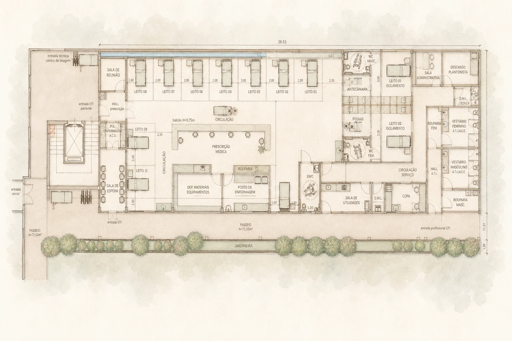
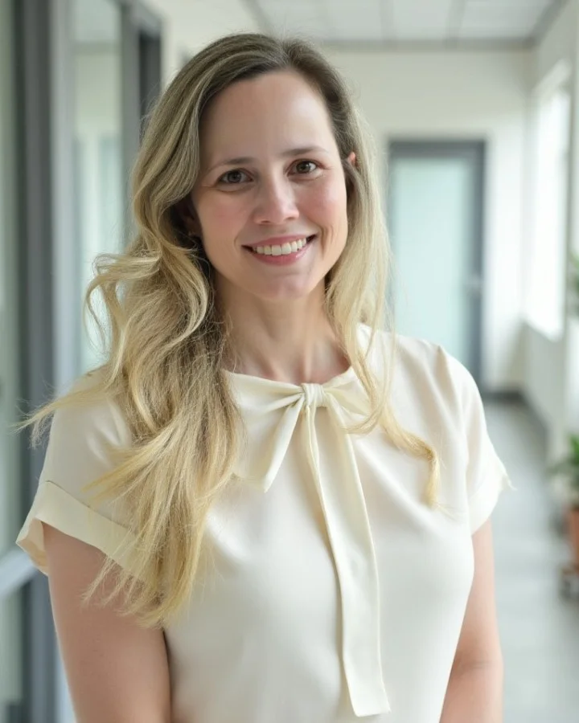
Cada projeto começa pela compreensão de seu uso, contexto e possibilidades técnicas.
Ao longo da trajetória, diferentes escalas e desafios contribuíram para uma experiência que transita pela arquitetura para a saúde, coordenação, compatibilização e viabilidade.
São dezoito anos entre construtora, incorporadora, órgão público e projeto autoral — de arquiteta orçamentista a coordenadora de projetos, passando pela análise de produto e de projetos em empreendimentos de médio e alto padrão e pelo projeto de unidades hospitalares aprovadas junto à Vigilância Sanitária.
O trabalho em saúde exige um tipo específico de escuta: entender a rotina de quem opera a unidade, estudar a norma antes de desenhar e checar cada decisão contra o que a Vigilância Sanitária vai cobrar na aprovação. Foi assim na UTI e no Centro de Imagem do Hospital Eduardo Dias.
Desde setembro de 2026 cursa a pós-graduação em Arquitetura Hospitalar na Faculdade Israelita Albert Einstein.
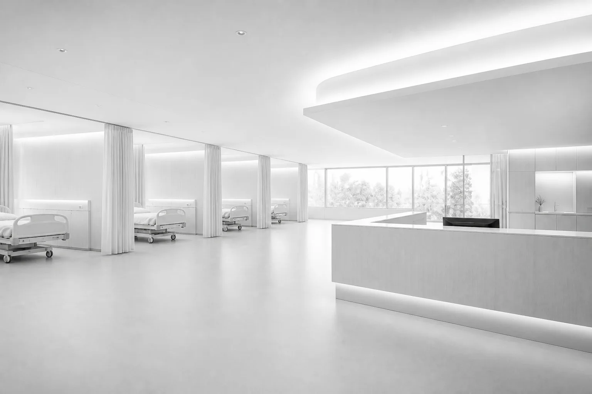
Imagem conceitualUnidades assistenciais e de diagnóstico por imagem, do levantamento de necessidades ao projeto executivo, com aprovação junto à Vigilância Sanitária pela RDC 50 da Anvisa.
O espaço escolhido para a implantação aproveitava a laje, os pilares e o piso de uma obra inacabada, que abrigaria o estacionamento de ambulâncias. Manter esse ponto era imprescindível: ali a unidade fica ao lado do Centro de Imagem e do Centro Cirúrgico.
São doze leitos, dois deles em quartos de isolamento com antecâmara, cuba, equipamento de uso individual e banheiro privativo — um destinado a pacientes imunodeprimidos e outro a doenças respiratórias.
O piso existente era um radier, o que limitava as instalações. A solução foi manter sobre ele apenas os leitos coletivos e criar novos pisos para os banheiros, sem comprometer os fluxos que a unidade exige.
O desenvolvimento incluiu estudo das normas, escuta dos funcionários do hospital e visitas a unidades de referência.
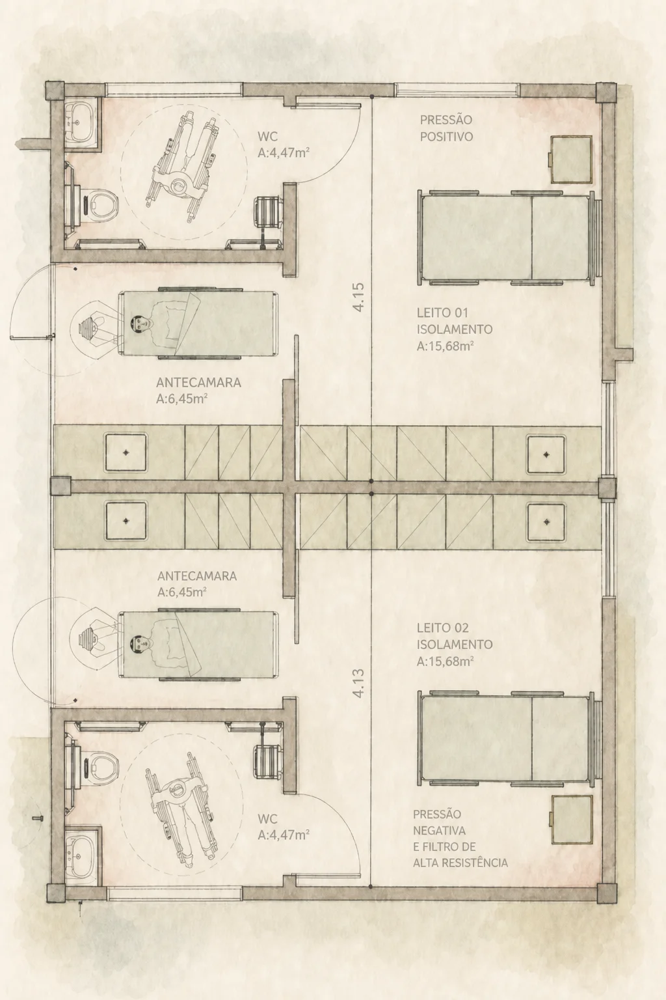
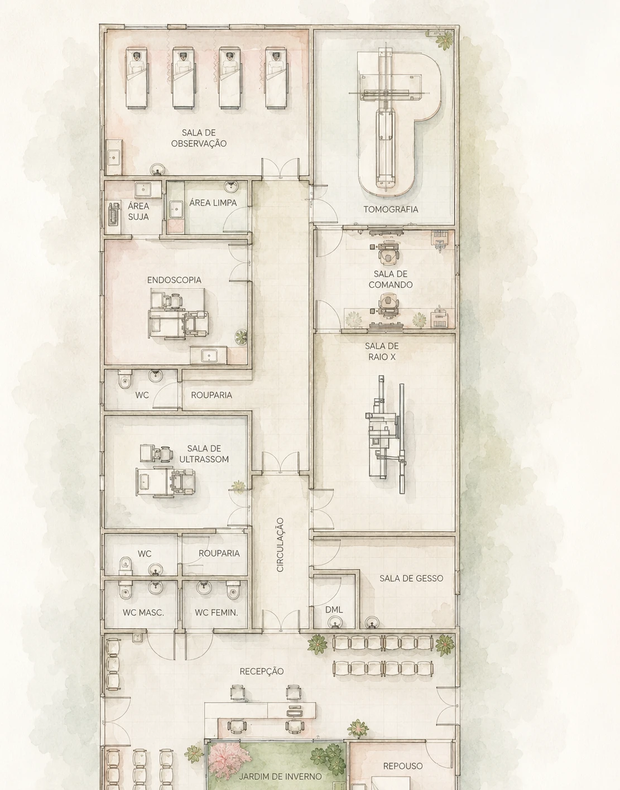
Reforma de uma unidade de diagnóstico por imagem em operação, e o primeiro trabalho dela dentro de um hospital.
Embora já tivesse experiência em trabalhos para a saúde, essa era a primeira vez em um hospital. O primeiro passo foi estudar as normas, o que contribuiu bastante para o partido do projeto.
A unidade reúne tomografia, endoscopia, raio-x e ultrassonografia, com sala de comando, recepção, rouparia e apoio, e a setorização precisou separar as áreas críticas das de circulação de pacientes e acompanhantes.
Os acabamentos seguiram os requisitos de área crítica e semicrítica: manta vinílica com piso condutivo na sala de tomografia e manta vinílica de alto tráfego na sala de endoscopia.
O Centro de Imagem já tinha uma sala de comando, e a RDC 50 permitia que ela atendesse também a sala de raio-x. A proposta evitou a compra de vidro plumbífero e reduziu o orçamento da obra.
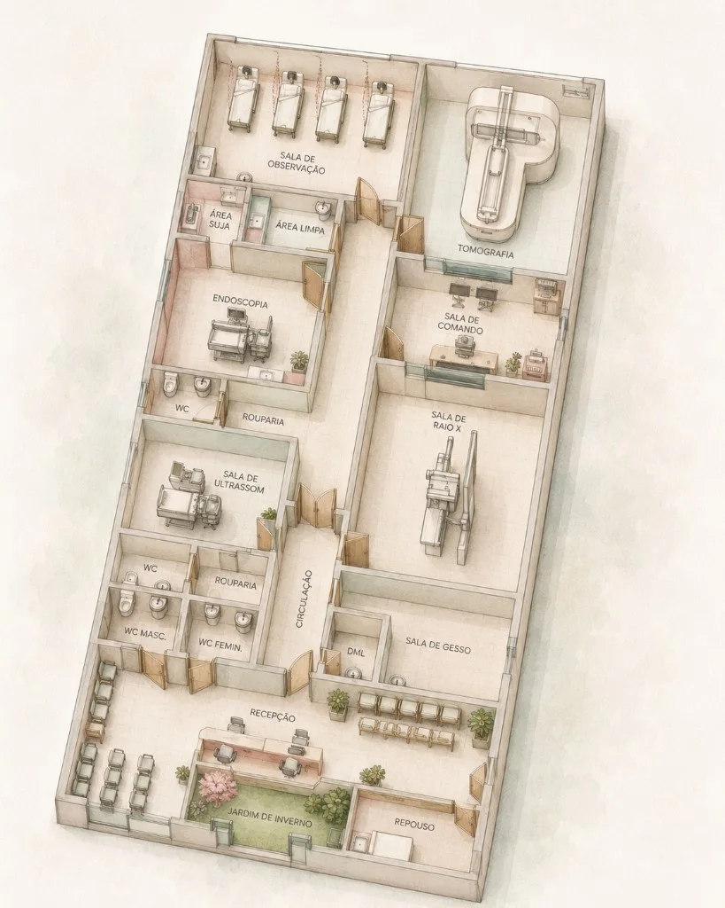
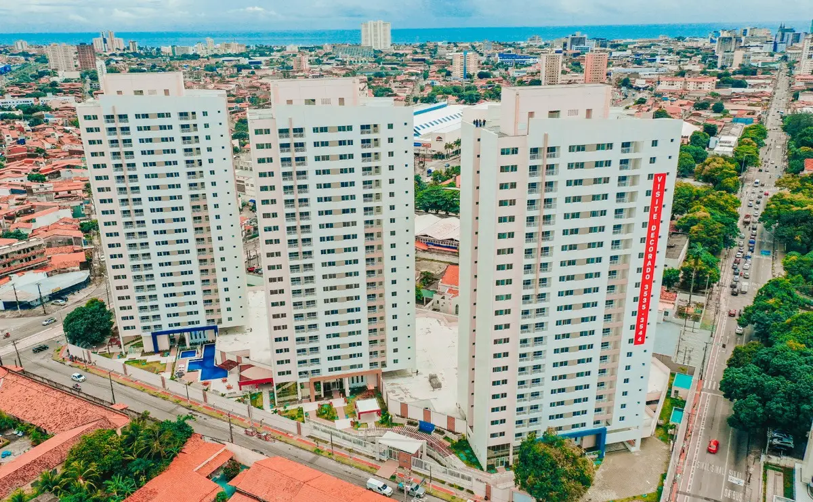
Aquarela Clube · obra entregueGerenciamento da compatibilização entre as multidisciplinas, análise de produto e acompanhamento de obra em empreendimentos residenciais de médio e alto padrão.
Todas as incompatibilidades foram sanadas ainda na entrega do projeto executivo.
Acompanhei empreendimentos da aprovação do projeto legal até a entrega da obra: projeto básico e executivo, compatibilização das multidisciplinas, administração do sistema de revisão e contratação dos escritórios de hidrossanitário, elétrico, combate a incêndio, SPDA e modelagem BIM, com visitas periódicas à obra.
No Aquarela, condomínio clube com apartamentos de 56,66 a 75,53 m², respondi pelo gerenciamento da compatibilização entre os escritórios envolvidos. Analisava as incompatibilidades em DWG e no Navisworks e preparava um documento com todos os apontamentos, apresentado em reunião com todos os envolvidos para alinhar decisões e ajustes.
A construtora BSPar depois incorporou o projeto aos seus empreendimentos.
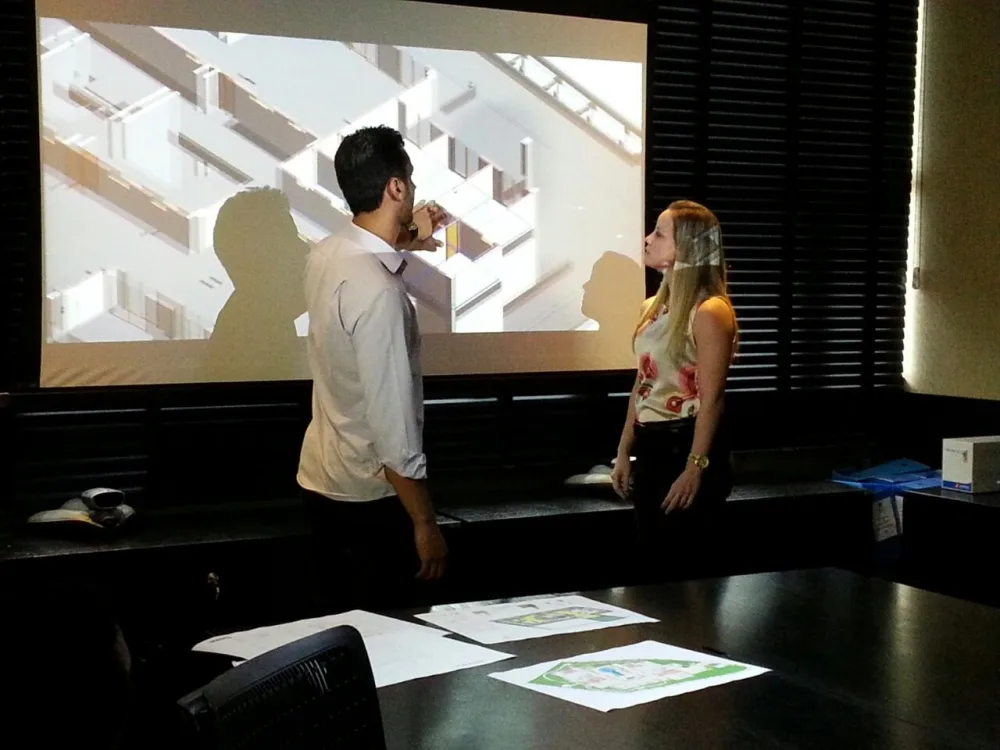
Cada analista respondia por quatro empreendimentos ao mesmo tempo, da concepção e da viabilidade técnica ao estudo preliminar e ao projeto legal, contratando e gerenciando os escritórios de arquitetura, interiores, paisagismo, sinalização e acessibilidade.
No MOMA, de alto padrão, com três torres e apartamentos de 82 a 111 m², respondi pela fase final: sinalização, ambientação das áreas comuns internas e externas, compatibilização do paisagismo durante a obra e os projetos de interiores das áreas comuns.
Também implantei o ponto de venda e o apartamento decorado e respondi pelos contratos das imagens 3D e da maquete física até a entrega.
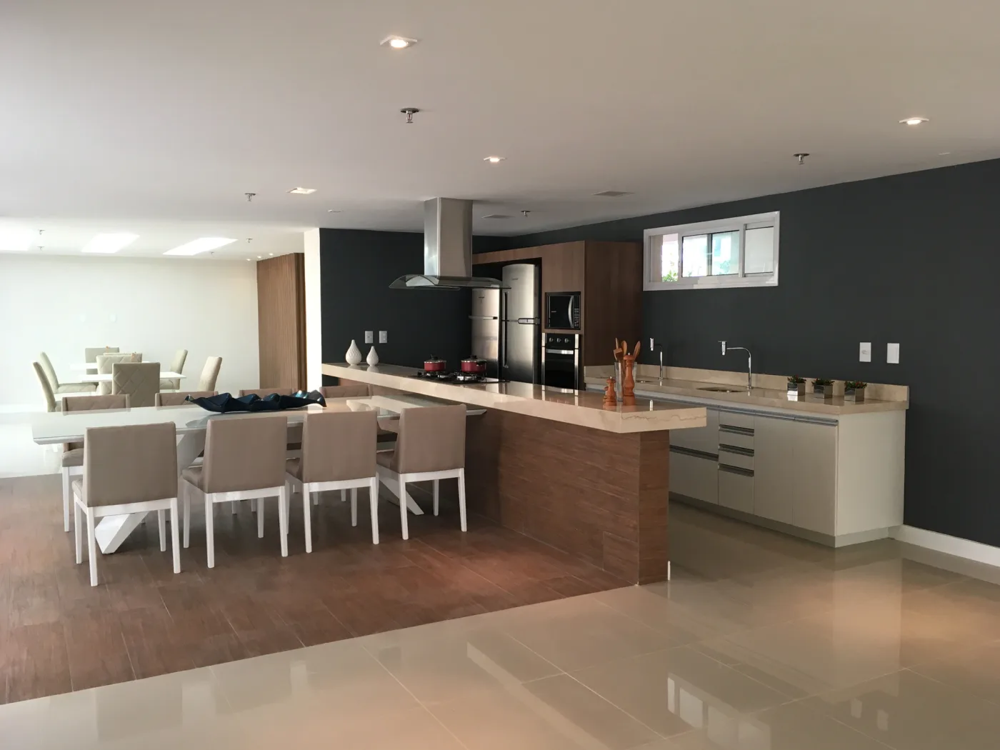
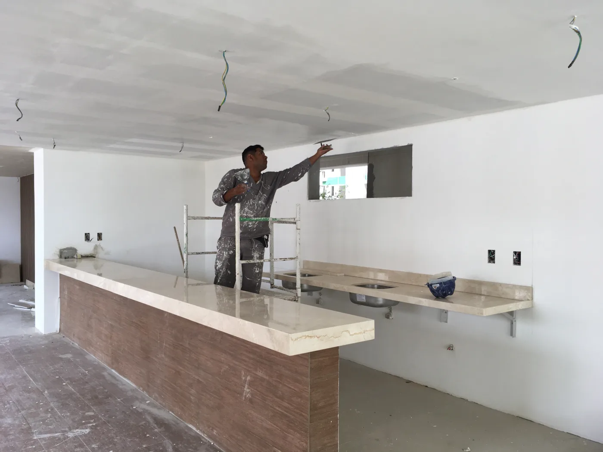
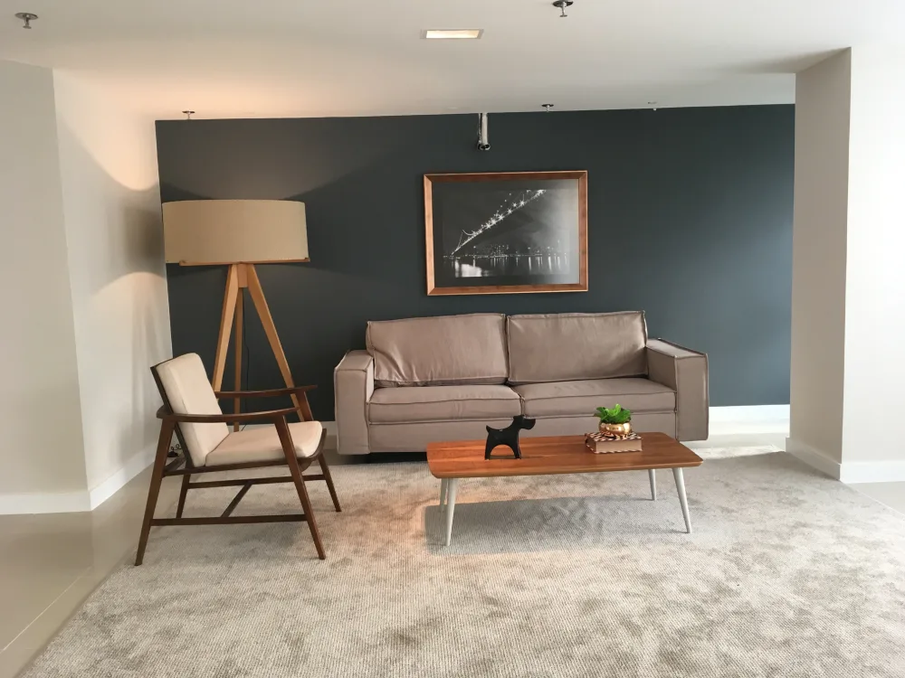
Projetos executivos para a Secretaria de Infraestrutura de Aracati, com orçamento restrito, materiais disponíveis na região e preocupação com manutenção.
Replanejamento de uma área subutilizada em praça arborizada, com espaço pet, playground, pista de cooper e convivência noturna.
Retrofit de um prédio onde funcionava uma UPA, com adequação de níveis para acessibilidade e preservação das aberturas existentes.
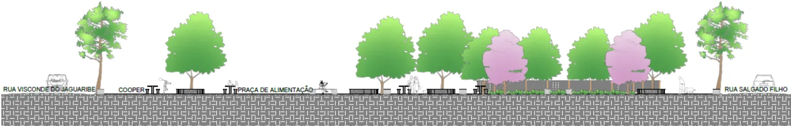
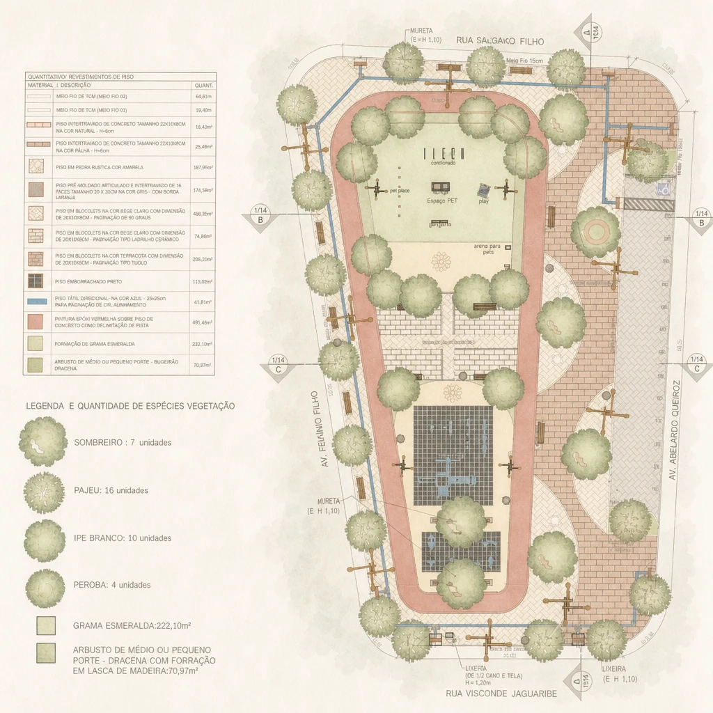
Uma área subutilizada, com árvores cujas raízes invadiam a rede de esgoto, virou praça arborizada de uso diurno e noturno.
O terreno era ocupado por um centro de artesanato com poucas lojas e uma área verde só com areia. O centro foi reconstruído em um ponto mais atrativo para as vendas turísticas, e o espaço foi replanejado para atender melhor os anseios locais.
O programa reúne um trecho bem arborizado com espaço pet, playground, pista de cooper e área de convivência, em que os bares e lanchonetes próximos possam colocar mesas e cadeiras à noite.
O orçamento era bastante restrito, o que orientou as escolhas de piso para atender à região, à manutenção e à verba destinada à demanda.
Retrofit de um prédio antigo onde funcionava uma UPA.
Para que o edifício atendesse ao programa de necessidades de uma biblioteca, foi preciso demolir e construir paredes, movimentar terra e adequar os níveis de piso para acessibilidade.
A proposta preservou as janelas, as portas e o buganvile existente.
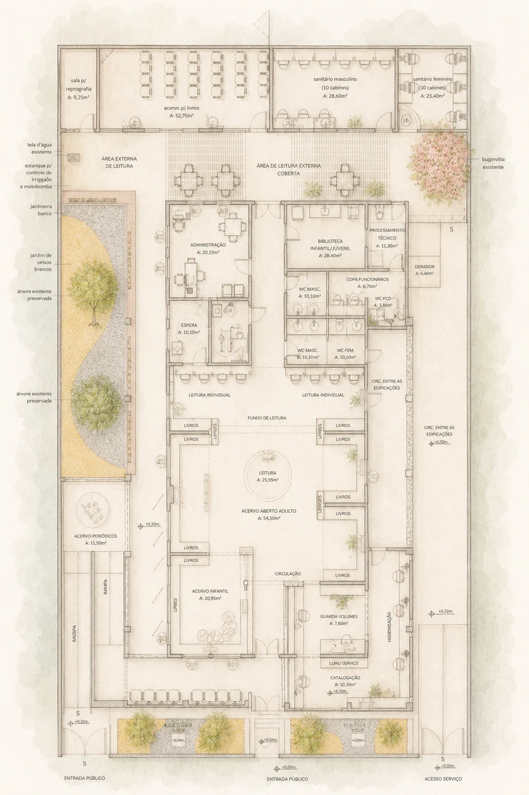
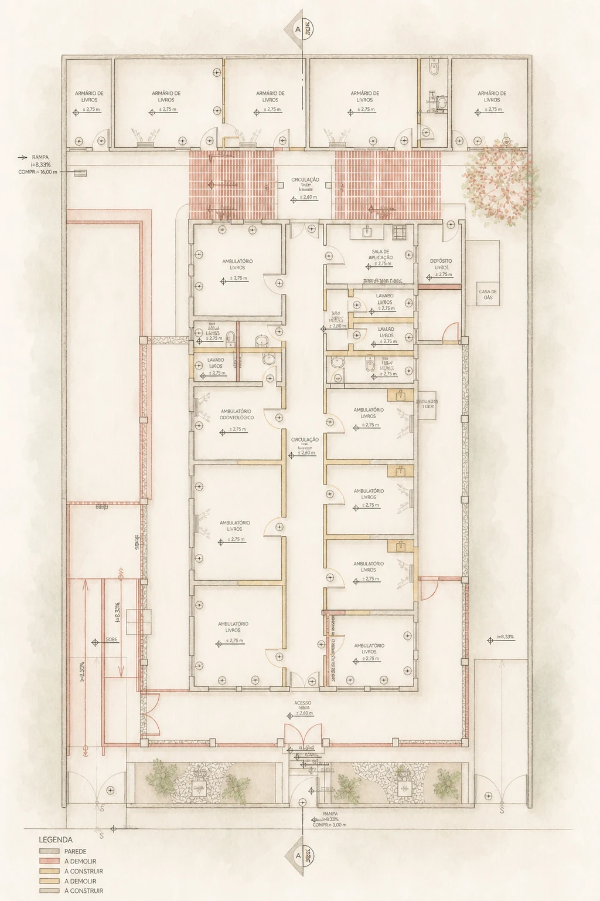
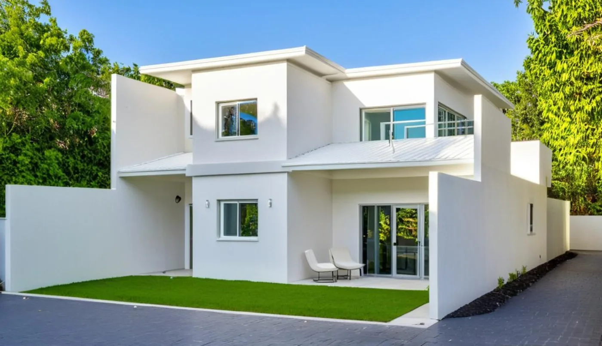
Casa para um casal com dois filhos em lote de 270,78 m², com 116,17 m² no térreo e 66,79 m² no pavimento superior. Foi o primeiro projeto inteiro dela em Revit, e o ganho apareceu em duas frentes: de um desenho de planta saem cortes, fachadas e modelagem, e a extração de quantitativos tornou a conversa de custo com o cliente muito mais objetiva.
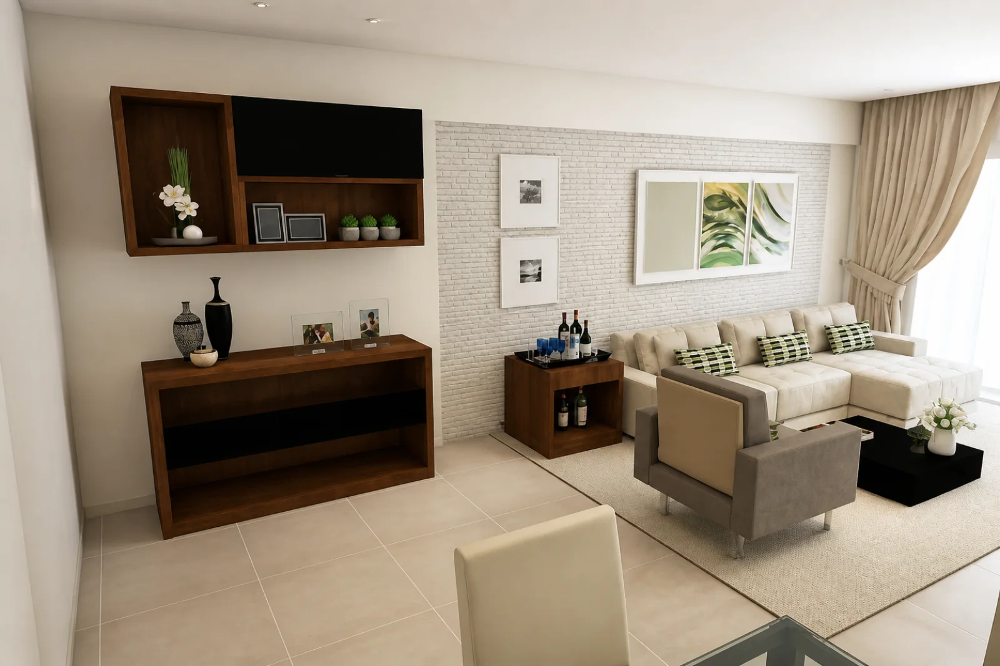
As propostas de interiores partem do cliente: na primeira reunião depois do fechamento do contrato, ela faz um estudo por preferências, referências e necessidades pessoais. Neste caso o pedido era um ambiente que transmitisse conforto, com cores básicas e móveis escuros. O executivo saiu em AutoCAD, a modelagem em SketchUp e a renderização em V-Ray.
Disponível para projetos e posições em arquitetura para a saúde.